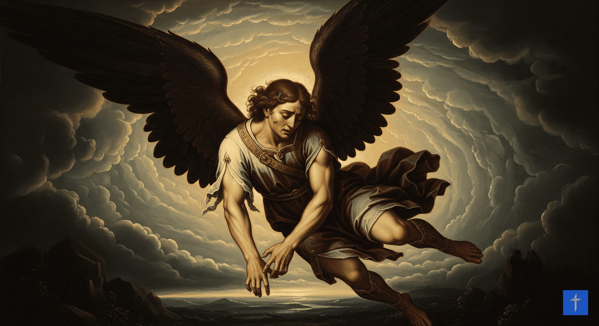
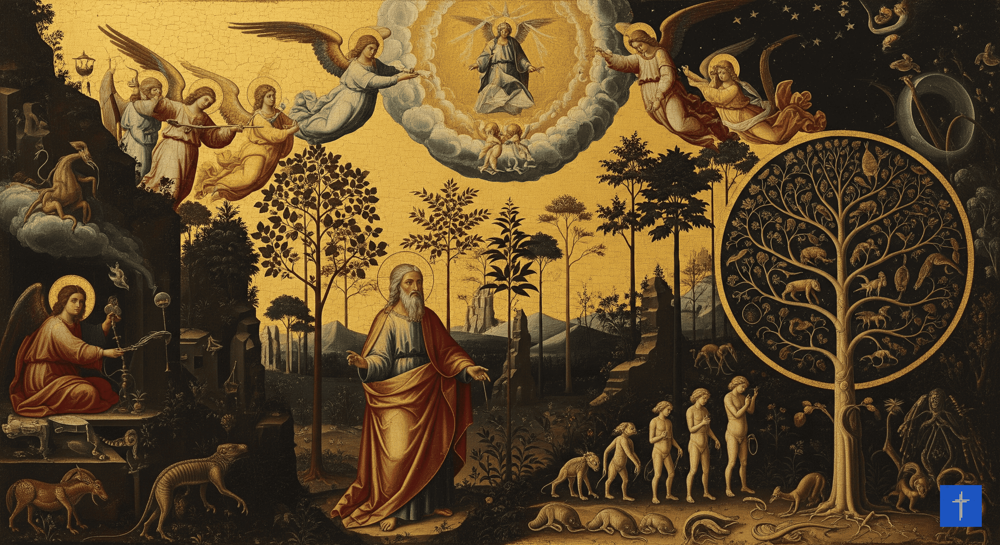

Finalmente, ¿qué significa amar en el plan de Dios? Entiende la Naturaleza del Amor.
¡Esperamos que este viaje te ayude a conocer más a Dios!
1. ¿Cuál es el propósito de nuestra existencia?
Fig. 1 - La creación del universo según la cosmovisión cristiana.
La Biblia nos enseña que Dios, en Su gran amor, creó todo el universo y a nosotros, los humanos, con un propósito muy especial: Él quería tener una relación de amistad y amor con nosotros. Nos hizo ¡a Su imagen! (eso lo puedes leer en Génesis 1:26-27). Esto significa que nos dio la capacidad de pensar, sentir, elegir lo correcto y ser creativos, como Él.
Además, nos dio una tarea importante: cuidar todo lo que creó (Génesis 1:28). Y para que el amor y la obediencia fueran de verdad, no obligados, Dios nos dio un regalo grandioso: el libre albedrío. ¿Qué es eso? Es la capacidad de elegir por nosotros mismos entre lo bueno y lo malo. ¡Los ángeles también tuvieron ese regalo!
Para entenderlo mejor:
Imagina que Dios es como el mejor constructor y artista del mundo. Él no quería que sus creaciones fueran solo objetos que obedecen sin pensar. Quería seres que pudieran elegir amarlo y relacionarse con Él de forma genuina. Por eso, nos dio la libertad de decidir. Es como cuando alguien te da la libertad de elegir tus propias acciones, porque lo que más valora es una relación basada en la elección y el amor verdadero.
2. ¿Cómo se originó el mal?

Fig. 2 - Representación del ángel caído.
¡Dios no creó el mal! El mal es como un vacío o una imperfección en algo que originalmente era bueno. No es una sustancia en sí misma, sino la ausencia o la distorsión de lo que fue creado con perfección. Como señala Agustín de Hipona (354-430 d.C.), el mal es privatio boni (privación del bien). El mal moral que vemos en el universo, como el egoísmo o la violencia, surgió por la desobediencia de seres que tenían la capacidad de elegir libremente.
"El primero en desobedecer fue Satanás (originalmente conocido como Lucifer), un ángel de gran rango y perfección. Él, movido por un inmenso orgullo, deseó exaltarse por encima de Dios (Isaías 14:12-15; Ezequiel 28:12-19). Su acto de rebeldía puede resumirse así:"
Orgullo → Rebeldía → Desobediencia → Pecado
Al elegir separarse de Dios, quien es la fuente de todo bien y vida, la naturaleza de Satanás se corrompió. Ahora, todo lo que él hace está intrínsecamente alejado del bien. Sin embargo, no todos los ángeles siguieron este camino. Aquellos que permanecieron fieles a Dios lo hicieron por un amor inquebrantable y una obediencia confirmada. Esto nació de su profunda contemplación de la gloria divina (conocida como la visión beatífica) y de una sabia conciencia de las graves consecuencias de la rebelión.
Para entenderlo mejor:
Imagina que la creación de Dios era como una obra de arte perfecta. El mal no es una parte que Dios creó, sino como una mancha que apareció cuando una parte de la creación (Satanás) decidió ir en contra del diseño original. Satanás, siendo un ser con gran libertad, se llenó de orgullo y quiso ser como Dios. Al alejarse de Dios, que es la fuente de todo lo bueno, su naturaleza se distorsionó. Los ángeles que permanecieron fieles, lo hicieron porque pudieron ver la increíble perfección y bondad de Dios, y entendieron que nada era mejor que estar con Él.
3. ¿Por qué hay tanto sufrimiento en el mundo?
Fig. 3 - Adán y Eva en el Jardín del Edén.
Después de la rebelión de Satanás, el pecado también entró en la humanidad a través de la desobediencia de Adán y Eva en el Jardín del Edén (Génesis 3). Esto tuvo una consecuencia profunda: toda la humanidad heredó una naturaleza pecaminosa (Romanos 5:12) y la inevitable "paga del pecado es muerte" (Romanos 6:23).
Las consecuencias teológicas clave de la entrada del pecado incluyen:
Nuestra naturaleza humana quedó dañada, lo que nos lleva a una inclinación al mal y, en última instancia, a la muerte (Romanos 6:23).
La relación con Dios, con nosotros mismos, con los demás y con la creación se rompió.
El sufrimiento, el dolor y la muerte física se hicieron parte de la experiencia humana en este mundo.
Dios manifiesta Su bondad con bendiciones y Su justicia con consecuencias o "maldiciones" por el pecado (Génesis 3:16-19; Deuteronomio 28). Estas consecuencias no son caprichos divinos, sino el resultado directo de la desobediencia y la separación de Dios, quien es la fuente de vida y bien. Conceptos como la sobrepoblación, con sus problemas asociados, solo tienen sentido en un mundo caído, afectado por el pecado y sus limitaciones, no en el plan original y perfecto de Dios para una humanidad inmortal.
Para entenderlo mejor:
Cuando Adán y Eva desobedecieron, fue como si hubieran introducido un "virus" en la humanidad. Ese virus del pecado no solo nos afecta a nosotros por dentro, sino que también afecta el mundo que nos rodea. Por eso vemos sufrimiento, enfermedades y la muerte. Dios no nos castiga por diversión; más bien, el sufrimiento es el resultado natural de vivir en un mundo que se ha separado de su diseño original perfecto, donde Dios es la fuente de toda bendición y vida.
4. ¿Hay alguna esperanza o solución para el problema del pecado?
Fig. 4 - Símbolo del plan de redención de Dios.
A pesar de la entrada del pecado en el mundo, este evento no tomó a Dios por sorpresa. En Su omnisciencia (que todo lo sabe) y soberanía (que tiene el control total), Él ya tenía un plan de redención establecido desde antes de la fundación del mundo (Efesios 1:4). Este plan no fue un "parche" o una improvisación ante un error, sino la manera perfecta en que Dios manifestaría plenamente Su amor, Su misericordia, Su justicia y Su gloria.
"La caída no tomó a Dios por sorpresa. Su plan eterno incluía permitir el pecado para luego vencerlo de manera que manifestara plenamente sus atributos de amor, misericordia, justicia y gloria." (Frame, 2013)
Él permite el pecado (sin ser la causa del mismo), pero lo usa dentro de Su plan más grande para Sus propios propósitos de gloria y redención.
Para entenderlo mejor:
Imagina que Dios es como un gran estratega que siempre tiene un plan perfecto, incluso antes de que algo "salga mal". El pecado no lo tomó desprevenido. En lugar de ser un problema que arruinó Su plan, Dios ya había diseñado una forma de usarlo para mostrar cuán grande es Su amor, Su capacidad para perdonar y Su justicia. Su plan de rescate no es un "plan B", ¡es el plan principal y más glorioso que siempre tuvo!
5. El Propósito de la Ley y los Diez Mandamientos
Fig. 5 - Representación de las Tablas de la Ley.
La Ley Mosaica, incluyendo los Diez Mandamientos, no fue una "actualización" tardía porque Dios no lo hubiera previsto. Más bien, fue una revelación progresiva de la voluntad de Dios, dada en un momento específico de la historia de Israel (Éxodo 20). Los propósitos de la Ley fueron multifacéticos:
Revelar el pecado: Mostrar claramente a la humanidad su incapacidad de cumplir los estándares perfectos de Dios y, por lo tanto, su profunda necesidad de un Salvador (Gálatas 3:24).
Educar y guiar: Enseñar al pueblo de Israel cómo vivir en una relación de pacto con un Dios santo y establecer normas para una sociedad justa y ordenada.
Preparar el camino para el Mesías: La Ley era una sombra de las cosas buenas que habrían de venir (Hebreos 10:1), señalando la necesidad de un sacrificio perfecto que la cumpliera.
Los Diez Mandamientos incluyen principios como: no tener otros dioses, no hacer imágenes, no tomar el nombre de Dios en vano, acordarse del día de reposo, honrar a los padres, no matar, no cometer adulterio, no hurtar, no hablar falso testimonio y no codiciar (Éxodo 20:3-17).
Para entenderlo mejor:
Piensa en la Ley como un espejo. Cuando te miras al espejo, ves si estás limpio o si tienes alguna mancha. La Ley de Dios es así: nos muestra lo perfectos que debemos ser y, al mismo tiempo, nos revela que no somos capaces de cumplir esa perfección por nosotros mismos. Nos ayuda a darnos cuenta de que necesitamos ayuda externa, un "limpiador" o un "salvador", que es Jesús. También nos da pautas para vivir de una manera que honre a Dios y sea buena para nuestra sociedad.
6. ¿Quién es Jesús y por qué es tan importante para la salvación?
Fig. 6 - Jesús en la cruz y resucitado.
Jesús es una figura central porque Él es plenamente Dios y plenamente hombre al mismo tiempo. Nació sin pecado (Hebreos 4:15) gracias a su concepción por el Espíritu Santo (Lucas 1:35). Su impecabilidad (ser sin pecado) fue crucial porque solo un ser sin mancha podía pagar el precio por los pecados de toda la humanidad.
La resurrección de Jesús al tercer día fue la confirmación suprema de que Su sacrificio fue aceptado por Dios y que Él venció al pecado y a la muerte de una vez por todas (Romanos 4:25). Por medio de Jesús, Dios obra la redención completa para la humanidad pecadora (1 Corintios 1:30).
Ya no necesitamos sacrificios continuos de animales, pues Jesús fue el sacrificio definitivo y perfecto, el "Cordero de Dios que quita el pecado del mundo" (Juan 1:29; Hebreos 9:26-28). La salvación y la justificación (ser declarados justos ante Dios) se obtienen por fe en Él, no por obras humanas (Efesios 2:8-9).
Para entenderlo mejor:
Piensa que la humanidad tenía una deuda enorme con Dios por nuestros pecados, una deuda que nadie podía pagar. Jesús vino como el único que no tenía deudas, y Él se ofreció a pagar la deuda de todos nosotros con Su propia vida. Su resurrección fue como el recibo de que la deuda fue pagada por completo y aceptada por Dios. Así que, para ser "limpiados" y tener una relación correcta con Dios, no necesitamos esforzarnos en pagar esa deuda (no podemos), sino simplemente confiar en que Jesús ya la pagó por nosotros.
7. ¿Puede la ciencia (como la evolución) coexistir con la fe en Dios como Creador?

Fig. 7 - Símbolo de la evolución y la fe.
Muchos cristianos adoptan la perspectiva de la evolución teísta o creacionismo evolutivo, que concilia la teoría científica de la evolución con la creencia en Dios como Creador. Esta visión interpreta los "seis días" de la creación en Génesis como largos períodos o eras de tiempo, no días literales de 24 horas. Esto es plausible dado que Dios está fuera de las limitaciones del tiempo humano (2 Pedro 3:8: "Mas, oh amados, no ignoréis esto: que para con el Señor un día es como mil años, y mil años como un día").
Desde esta perspectiva, la evolución es vista como el mecanismo o método que Dios estableció y sustentó para desarrollar la biodiversidad y la vida en la Tierra. El relato de Génesis se considera una verdad teológica sobre el "quién" (Dios es el Creador) y el "por qué" de la creación, más que un manual científico detallado del "cómo". En algún punto del proceso evolutivo, Dios actuó de manera especial para infundir el alma o el espíritu en la humanidad, haciéndonos portadores de Su imagen.
Para entenderlo mejor:
Imagina que la Biblia es un libro que te dice que una casa fue construida por un arquitecto brillante (Dios) y que la construyó con un propósito (para vivir en ella). La ciencia, por otro lado, es como el manual de ingeniería que explica los materiales que se usaron y cómo se ensamblaron. Ambos te dicen cosas ciertas sobre la casa, pero desde perspectivas diferentes. La fe te habla del Creador y Su propósito, y la ciencia puede explorar los procesos que Él usó para llevar a cabo Su creación. No tienen por qué contradecirse, sino complementarse en una visión más completa de la realidad.
8. ¿Qué significa amar en el plan de Dios?
Fig. 8 - Diferentes tipos de amor.
Existen diferentes cualidades de amor en el plan de Dios, cada una con un valor único:
El Amor de Dios: Es el amor perfecto, incondicional, santo y soberano. Dios se glorifica a sí mismo (no es un orgullo pecaminoso), manifestando Su infinita excelencia a través de Su ser y Sus obras.
El Amor de los Ángeles Fieles: Es un amor de adoración, obediencia y servicio perfectos, nacido de la visión beatífica (la contemplación directa de la gloria de Dios) y de una obediencia confirmada.
El Amor de la Humanidad Redimida: Es un amor de gratitud profunda, fe y elección consciente. Aunque somos más susceptibles al pecado que los ángeles y vivimos en un mundo caído, nuestro amor es inmensamente precioso para Dios. Este amor se manifiesta al elegirlo y buscarlo a Él, a pesar de las tentaciones y nuestras debilidades, como una respuesta a Su inmensa gracia y redención. Esto trae una gloria única a Dios, ya que Su amor y poder son evidentes al transformar corazones que estaban en rebelión.
Para entenderlo mejor:
El amor de Dios es la fuente de todo amor, es perfecto y no necesita nada de nosotros. El amor de los ángeles que permanecieron fieles es un amor puro de adoración, porque ellos ven a Dios tal como es y no tienen duda. Nuestro amor, el de los humanos que hemos sido rescatados por Jesús, es especial para Dios. Aunque no somos perfectos y todavía luchamos con el pecado, cuando elegimos amarlo y confiar en Él, incluso con nuestras debilidades, eso le da una gloria muy particular. Es un amor que viene de la gratitud por haber sido perdonados y transformados, mostrando el poder increíble de Su gracia.